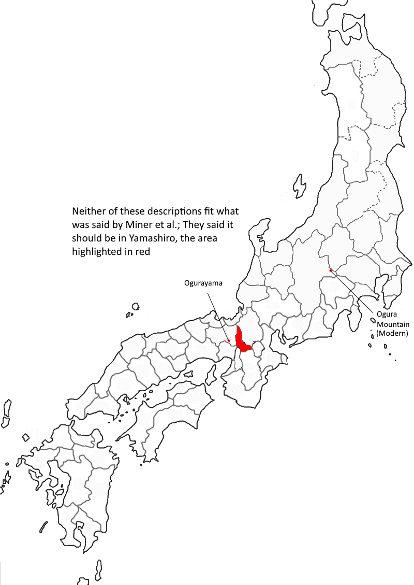

Poem #312 
ゆふづく夜をぐらの山になくしかのこゑの内にや秋はくるらむ
yūzukuyo
ogura no yama ni
naku shika no
koe no uchi ni ya
aki wa kururamu
ogura no yama ni
naku shika no
koe no uchi ni ya
aki wa kururamu
Might autumn perhaps
utter its final farewell
through the calling stag
at dark Ogurayama,
mountain of the crescent moon?
utter its final farewell
through the calling stag
at dark Ogurayama,
mountain of the crescent moon?

Background Information
Ogura Mountain became a place of importance after the compilation of the Kokinshu, in which Fujiwara no Sadaie (or Teika) compiled Ogura Hyakunin Isshu, better known as the Hyakunin Isshu (100 poets, one poem each).Originally, Teika had wanted to use the poems to decorate screens at a residence on Mount Ogura, but it created something far larger: something still seen in modern culture, as a popular card game and anime.